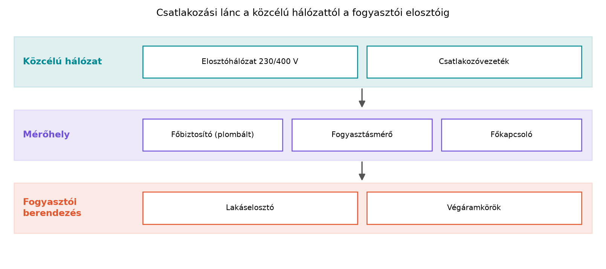

![Mérőhely egyvonalas rajza TN-C-S rendszerben: főbiztosító → mérő → főkapcsoló - Egyvonalas rajz: a felső vonal a három fázis (L1, L2, L3), az alsó a PEN. F1 háromfázisú főbiztosító és P1 háromfázisú, közvetlen fogyasztásmérő a plombált, hálózati engedélyesi zónában; Q1 főkapcsoló a fogyasztói mezőben. A PEN-t a hálózati engedélyes előírása szerinti ponton választják szét N-re és PE-re; ettől kezdve a kettő külön fut, és nem köthető össze. Tanulási példa (ellenőrizendő: a hálózati engedélyes műszaki feltételei).](assets/ve060-diagram-2.png)
Ha egy családi ház villanyszerelését építed, hiába szereled fel a lakáselosztót, a dugaszoló aljzatokat és a világítást, amíg az épületet nem csatlakoztatják a közcélú 230/400 V-os hálózathoz. A hálózati engedélyes soha nem fogja „bekötni az órát” egy kérésre, hanem megvizsgálja a mérőhely kialakítását, a csatlakozóvezetéket és a fogyasztói hálózatot. A mérőhely az a határfelület, ahol a szolgáltató és a fogyasztó felelőssége találkozik. Ha a mérőhely nem felel meg, az áramszolgáltatás nem indul el, és a villanyszerelővel szemben is megrendül a bizalom. Ezért pontosan kell ismerned az elosztóhálózat, a csatlakozóvezeték, a főbiztosító, a mérő és a főkapcsoló sorrendjét, valamint a plombálás szerepét.
Az alábbi rétegábra a közcélú hálózattól a lakáselosztóig mutatja a teljes csatlakozási láncot. A mérőhelyen belül a mérő előtti rész a hálózati engedélyes plombált területe, a mérő utáni főkapcsoló pedig már a fogyasztóé.

A rétegábra szemlélteti: a hálózati oldalról érkező csatlakozóvezeték a mérőhelybe lép, ahol először a főbiztosító, majd a fogyasztásmérő, utána a fogyasztói főkapcsoló, végül a fogyasztói elosztó felé a fővezeték következik. A mérő előtti részt a hálózati engedélyes plombálja, mert ott a fogyasztó nem avatkozhat be. A mérő után következő részt a fogyasztó szerelője alakíthatja ki, de a fővezetéknek is védelemmel ellátottnak kell lennie.
Definíció. A közcélú elosztóhálózat a hálózati engedélyes által üzemeltetett kisfeszültségű villamos hálózat, amely a fogyasztókhoz eljuttatja az energiát. Magyarországon a hálózati feszültség névleges értéke egyfázisú körben , háromfázisú körben vonali feszültség , frekvenciája .
Definíció. A csatlakozóvezeték (gyakran „bekötő vezeték”) az elosztóhálózat azon szakasza, amely a közcélú hálózat csatlakozási pontjától a fogyasztási helyig, rendszerint a mérőhelyig vezet. A csatlakozási pont a közcélú hálózat és a csatlakozóvezeték határa; a csatlakozóvezeték a csatlakozási ponttól a felhasználási helyig (mérőhelyig) tart. A csatlakozóvezeték tulajdonjoga és kiépítésének költségviselése jogszabályfüggő (ellenőrizendő: VET és az elosztói szabályzat hatályos szövege).
Definíció. A fővezeték a mérőhelytől (főkapcsolótól) a lakás- vagy épületelosztóig tartó fogyasztói vezeték.
Definíció. A főbiztosító a csatlakozóvezeték és a mérő közötti túláramvédelmi készülék. Feladata a fogyasztói hálózat és a mérő túláram-, elsősorban zárlatvédelme, valamint a hálózat védelme a fogyasztói oldalról visszaható hibákkal szemben. A főbiztosító értékét a hálózati engedélyes határozza meg a szerződött lekötött teljesítmény alapján, és azt a szolgáltató plombálja. A fogyasztó a főbiztosítót nem cserélheti, nem szerelheti ki, és nem avatkozhat bele.
Definíció. A fogyasztásmérő (energiamérő) az a mérőeszköz, amely a fogyasztó által vételezett villamos energiát integrálja, jellemzően kWh-ban. A mérő elve a Teljesítmény- és energiamérés, fogyasztásmérők alfejezetben már tárgyalt: a feszültség és az áram pillanatértékének szorzatát, vagyis a hatásos teljesítményt összegzi. Az elektronikus fogyasztásmérő a mérőállandó szerinti impulzusokat bocsát ki, és azokból származtatja a fogyasztást. A fogyasztásmérőt a hálózati engedélyes vagy az általa megbízott szolgáltató szereli fel, a mérésügyi törvény hatálya alá tartozik (ellenőrizendő: hatályos mérésügyi jogszabály).
Definíció. A mérőhely a fogyasztásmérő, a mérőváltók, a főbiztosító és a csatlakozó vezetékek elhelyezésére szolgáló, illetéktelen hozzáféréstől védett, plombálható tér vagy szekrény. A mérőhely lehet önálló mérőszekrény, mérőfülke, épületben kialakított, zárható mérőhelyiség, vagy a hálózati engedélyes által elfogadott egyéb megoldás.
A mérőhelynek egyértelműen el kell különítenie a hálózati engedélyes és a fogyasztó területét. A mérőszekrényben a sorrend mindig a következő:
A sorrendet egyvonalas kapcsolási rajzon az alábbi ábra mutatja. A felső vonal a három fázist jelöli (a „/ 3” jel szerint három vezető), az alsó a csatlakozóvezeték PEN-vezetőjét. Balról jobbra: F1 főbiztosító, P1 háromfázisú, közvetlen fogyasztásmérő (a fázisokra és a nullára kötve) – ez a kettő a plombált, hálózati engedélyesi zóna –, majd a fogyasztói mezőben a Q1 főkapcsoló és a lakáselosztó felé menő fővezeték. A PEN-t a szétválasztási ponton N-re és PE-re bontják, ettől kezdve a kettő külön fut.
Szabály. A fogyasztói főkapcsoló a mérő után, a fogyasztói oldalon helyezkedik el. Feladata, hogy a fogyasztói hálózatot egyetlen művelettel feszültségmentesíthessék, például karbantartáskor vagy vészhelyzetben. A főkapcsoló nem helyettesíti a túláramvédelmet; az elosztóban lévő kismegszakítók és védőkapcsolók külön védelmet adnak. A főkapcsoló névleges áramát a hálózati engedélyes által engedélyezett csatlakozási teljesítményhez igazítják.
Szabály. A mérőhelyet úgy kell kialakítani, hogy a fogyasztásmérőhöz és a plombált részekhez a fogyasztó ne férhessen hozzá a plomba megsértése nélkül. A mérést megkerülni tilos. A mérőszekrény általában:
Szabvány. A mérőhely kialakítására a hálózati engedélyes saját műszaki feltételei, a csatlakozási pontra vonatkozó elosztói szabályzat és a hatályos MSZ HD 60364 sorozat az irányadó. A fogyasztásmérőre, a mérőváltókra és a plombálásra a mérésügyi törvény előírásai is vonatkoznak. Az itt bemutatott méretek és sorrendek tanulási példák, amelyeket az aktuális hálózati engedélyesi előírásokkal ellenőrizni kell. (ellenőrizendő: konkrét szabvány- és jogszabályhivatkozás, csatlakozási feltételek)
A mérőszekrényben a vezetékek színjelölése a szokásos: fázisvezető barna, fekete, szürke; nullavezető világoskék; védővezető zöld-sárga. A mérő előtti részen a nullavezető és a védővezető kapcsolata rendszertől függ: TN-C rendszerben PEN vezető van, amelyet a hálózati engedélyes által elfogadott ponton (jellemzően a mérőhelyen) választanak szét, ha a fogyasztói oldal TN-S. A szétválasztásról a Hálózati rendszerek: TN-C, TN-S, TN-C-S, TT, IT alfejezetben lesz szó. A szétválasztási ponton túl nem szabad a PE és N vezetőt újra összekötni.
A mérőszekrény szerkezetileg gyakran három fő mezőre oszlik, amelyek hozzáférési jogosultságban is különböznek:
Definíció. A plombálás olyan hatósági vagy szolgáltatói lezárás, amely fizikailag megakadályozza, hogy illetéktelen személy a mérőhöz, a mérőváltókhoz, a főbiztosítóhoz vagy a mérő előtti hálózati részhez hozzáférjen anélkül, hogy a plomba sérülése láthatóvá válna. A plomba lehet ólompecsétes, műanyag pecsétes vagy csavaros plomba. A plomba eltávolítása, megkarcolása, áthidalása jogszabályellenes, és mérési bírságot, áram kikapcsolását, végső esetben büntetőeljárást vonhat maga után. (ellenőrizendő: hatályos jogszabályi szankciók)
A plombálás tehát nem a szerelő munkáját akadályozza, hanem a mérés hitelességét és a hálózati rendszer biztonságát védi. A szerelőnek mindig ellenőriznie kell, hogy a munkája során a plombák sértetlenek; ha sérülést észlel, köteles jelezni a hálózati engedélyesnek. A plomba eltávolítását csak a hálózati engedélyes vagy az általa feljogosított személy végezheti.
A fogyasztói csatlakozás szigorúan szabályozott folyamat. Az alábbi lépések általában érvényesek, de az egyes hálózati engedélyesek eljárásrendje eltérhet:
Szabály. A csatlakozási dokumentációt a fogyasztói berendezés átadásakor meg kell őrizni. A mérőállás induló értéke, a főbiztosító értéke, a lekötött teljesítmény és a plomba száma is szerepel az átvételi jegyzőkönyvben. A későbbi felülvizsgálatnál ezek az adatok alapvetők.
A hibák elkerüléséhez fontos tudni, hol húzódik a határ. A hálózati engedélyes feladata:
A villanyszerelő (a megrendelő oldalán) feladata:
A szerelő nem nyúlhat a főbiztosítóhoz, nem szerelheti le a plombát, nem cserélheti a mérőt, és nem köthet a mérő előtti hálózati részre. A csatlakozóvezeték kivitelezését is csak a hálózati engedélyes engedélyével és felügyelete mellett végezheti, általában a kijelölt csatlakozási pontig.
Biztonsági korlát. A feladat tanműhelyi (törpefeszültségű) környezetre vagy jogosult oktató felügyeletére vonatkozik; hálózati feszültségen önállóan ne végezd. A mérőhelyen és a csatlakozóvezetéken végzett munka mindig feszültségmentes állapotban történjen, az öt biztonsági szabály betartásával: lekapcsolás, visszakapcsolás elleni biztosítás, feszültségmentesség ellenőrzése, földelés és rövidre zárás, szomszédos feszültség alatti részek lefedése. A mérőhelyet a hálózati engedélyes gyakran feszültségmentesen adja át a szerelőnek; a munkavégzés után a fogyasztói rész leellenőrzése a szerelő feladata. A főkapcsoló kikapcsolása csak a kimenő oldalt teszi feszültségmentessé; a főkapcsoló bemenő kapcsai, a mérő kimenete és a mérőtől érkező vezeték feszültség alatt maradnak, ezek feszültségmentesítését (a plombált főbiztosító kiemelését) csak a hálózati engedélyes végezheti vagy az ő közreműködésével lehetséges.
Egy társasházi lakás bővítésekor a tulajdonos háromfázisú, nagyobb teljesítményű ellátást kér, mert klímát, indukciós főzőlapot és villanyautó-töltőt tervez. A szerelő felméri a meglévő mérőhelyet: a régi egyfázisú mérőszekrényben a főbiztosító 25 A, a mérő egyfázisú, a főkapcsoló 25 A. A hálózati engedélyes kiküldöttje megállapítja, hogy a csatlakozóvezeték keresztmetszete nem elegendő a nagyobb teljesítményhez, és a mérőszekrényt ki kell bővíteni háromfázisú mérőhellyel. A szerelő a mérőszekrényt kicseréli, a csatlakozóvezetéket a hálózati engedélyes szakembere cseréli ki a csatlakozási pontig, a főbiztosítót 3×32 A-re cseréli. A szerelő a mérő után főkapcsolót szerel (a pólusszám a hálózati engedélyes előírása szerint), majd a lakáselosztóhoz 3 fázisú fővezetéket épít ki. A hálózati engedélyes ellenőrzi a mérőhelyet, beszereli a háromfázisú mérőt, plombálja a mérőt és a főbiztosítót, majd feszültség alá helyez. A tanulság: a csatlakoztatás nem csupán a mérőhely belső szereléséből áll, hanem a hálózati oldal és a fogyasztói oldal együttes koordinációjából.
Bár a mérő felszerelése és a plombálás a hálózati engedélyes feladata, a szerelő a következő lépéseket teszi meg a mérőhelyen:
1. feladat (A): Sorold fel a mérőhelyen belüli egységek helyes sorrendjét a hálózati oldaltól a fogyasztói oldal felé haladva!
2. feladat (A): Mi a plombálás célja? Nevezz meg legalább két olyan elemet, amelyet általában plombálnak!
3. feladat (B): Egy lakóházban a mérőhelyen a főbiztosító 3×32 A, a csatlakozóvezeték réz, a hálózati engedélyes szerint a megengedett feszültségesés a mérőhelytől (a főkapcsolótól) a lakáselosztóig, vagyis a fővezetéken nem haladhatja meg a 3%-ot. Számítsd ki, hogy mekkora maximális hossza lehet a fővezetéknek, ha a hatásos teljesítmény 20 kW, a teljesítménytényező , a vonali feszültség 400 V, és a vezeték ellenállása rézre , keresztmetszete ! A háromfázisú, szimmetrikus terhelésű kör vonali feszültségesése közelítőleg , ahol a vonali áram, a fővezeték (nyomvonal) egyirányú hossza (szimmetrikus terhelésnél az N-vezetőn nem folyik áram). Ellenőrizd a nagyságrendet!
4. feladat (B): Rajzold le egyvonalas kapcsolási rajzon a mérőhelyet: hálózati oldal, főbiztosító, fogyasztásmérő, főkapcsoló, lakáselosztó bemenet. Jelöld meg, hol van plombálás. (A rajz szöveges leírása is elég.)
5. feladat (C): Egy meglévő mérőhelyen a fogyasztó villanyórájának mérőszekrényén a plomba sérült. A szerelő észreveszi, de nem jelenti. Milyen veszélyei vannak ennek? Mi a helyes eljárás?
6. feladat (D): A hálózati engedélyes képviselője a mérőhely átvételekor azt tapasztalja, hogy a mérőhelyen a nullavezető és a védővezető a fogyasztói oldalon össze van kötve (TN-C-S rendszerben). Milyen hibát jelenthet ez, és miért kell javítani? Fogalmazz meg legalább két lehetséges következményt!
Önellenőrzés – válaszok
1. feladat: csatlakozóvezeték bevezetés → főbiztosító → fogyasztásmérő → főkapcsoló → fővezeték/lakáselosztó.
2. feladat: A plombálás célja az illetéktelen hozzáférés fizikai megakadályozása és a mérés hitelességének védelme. Általában plombálják a főbiztosítót, a fogyasztásmérőt, a mérőváltókat, a mérő előtti csatlakozókapcsokat.
3. feladat: Adott: , , , → , , . Keresett: a fővezeték maximális egyirányú hossza .
A vonali áram háromfázisú körben:
A háromfázisú vonali feszültségesés képletéből: Ebből :
Behelyettesítve:
Ellenőrzés: a ≈137 m egyirányú nyomvonalhossz (a vezeték nem felezendő) 10 mm² réznél számítási eredmény; ilyen hosszú fővezeték már nagy épületet feltételez, a valóságban általában rövidebb. Megjegyzés. Egyfázisú (fázis + N) körben a két vezető miatt a képlet 2-es szorzót használ, és a viszonyítási alap az fázisfeszültség; itt háromfázisú, szimmetrikus körről van szó, ezért szerepel. A 3 %-ot a feladat a fővezetékre adja meg, ezért a teljes 12 V-ot erre osztottuk. Ha a 3 % a csatlakozási ponttól számítana, a csatlakozóvezeték esését le kellene vonni (pl. 1 % esésnél a fővezetékre 2 % = 8 V marad, és ) (ellenőrizendő: hálózati engedélyes előírása). (Pontosabb használathoz az áramot a terhelésből, a vezeték impedanciájából kell számolni. A feladat tanító jellegű.)
4. feladat: A minta a 17.1.4 pontban lévő egyvonalas rajz (főbiztosító → mérő → főkapcsoló, PEN-szétválasztással). A rajz szöveges leírása: - Hálózati oldal: L1, L2, L3 és PEN bevezetés (TN-C szakasz). - Főbiztosító (3 pólusú) a fázisvezetőkön, plombával. - Fogyasztásmérő (3 fázisú, közvetlen) a fázisokon és nullán, plombával. - Főkapcsoló (3 vagy 4 pólusú; az N bontása a hálózati engedélyes előírása szerint (ellenőrizendő)), fogyasztói oldali; a PEN/PE nem kapcsolható. - PEN-szétválasztás a hálózati engedélyes által elfogadott ponton: innen N (világoskék) és PE (zöld-sárga) külön fut, és többé nem köthető össze. - Lakáselosztó bemenete a főkapcsoló után. - A plombálást a főbiztosító és a mérő körül jelöljük.
5. feladat: A sérült plomba arra utal, hogy valaki megkísérelhette a mérés megkerülését vagy a mérőhöz való hozzáférést. Ha a szerelő nem jelenti, a szabálytalan vételezés gyanúja őt is érintheti, és a fogyasztóval szemben mérési szabálytalansági eljárás indulhat (ellenőrizendő: hatályos jogszabályi szankciók, elosztói szabályzat). A helyes eljárás: azonnal értesíteni a hálózati engedélyest, a mérőhöz nem nyúlni, a munkát addig szüneteltetni, ameddig a jegyzőkönyv el nem készül.
6. feladat: TN-C-S rendszerben a PEN-t a hálózati engedélyes által elfogadott ponton (jellemzően a mérőhelyen vagy a fogyasztói főelosztóban) választják szét; attól kezdve a PE és az N szigorúan külön fut (ellenőrizendő: hálózati engedélyes műszaki feltételei). Ha a fogyasztói oldalon összekötik őket, a védővezetőn üzemi áram folyhat, ami:
Ha az összekötés nem a mérőhelyen, hanem a FI után (a lakáselosztóban, a FI terhelés felőli oldalán) van, akkor a FI kiold, vagy – kis terhelésnél – érzéketlenné válik (lásd Lakás- és épületelosztó felépítése). Javítás: a PEN szétválasztás után a PE és N sín külön, közöttük nincs összekötés a mérőhely fogyasztói oldalán.
A közcélú hálózathoz csatlakozás lánca: elosztóhálózat → csatlakozóvezeték → főbiztosító → fogyasztásmérő → főkapcsoló → fogyasztói elosztó. A mérőhely határfelület a hálózati engedélyes és a fogyasztó között; a mérő előtti rész plombált, a mérő utáni főkapcsoló a fogyasztóé. A főbiztosítót a hálózati engedélyes határozza meg és plombálja; a fogyasztó nem avatkozhat bele. A mérőszekrénynek biztosítania kell az illetéktelen hozzáférés megakadályozását, a mérő hűtését, a szabványos védettséget és a feliratozást. A csatlakozási folyamat az igénybejelentéstől a műszaki feltételeken, a kivitelezésen, a hálózati engedélyesi ellenőrzésen, a mérő felszerelésén és plombálásán át az üzembe helyezésig tart. A plombálás megsértése jogi következményekkel jár. A szerelő a fogyasztói oldalt készíti elő, a hálózati engedélyes a hálózati oldalt és a mérőt. Ezt a mérőhelyet tovább építjük a Lakás- és épületelosztó felépítése alfejezetben, ahol a lakáselosztó belső tagolását és a fővezeték méretezését tárgyaljuk.